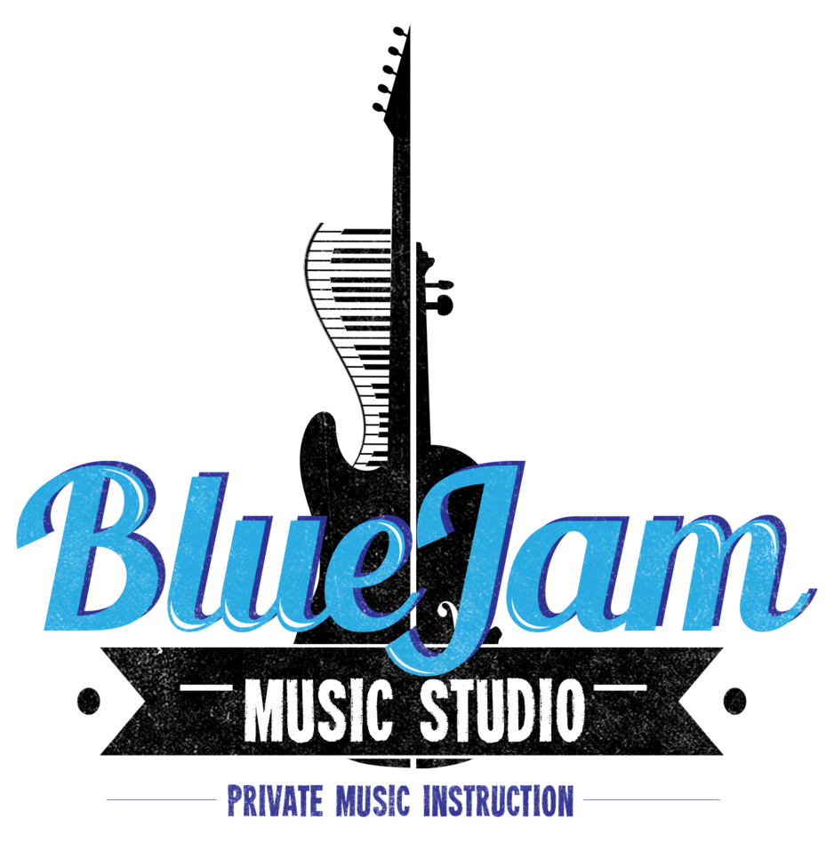

- 
No matter what age level or ability, Blue Jam Music is the perfect place to develop your piano skills. Blue Jam is designed to help the student set manageable goals while honing in on their own musical talent. What sets Blue Jam apart from other studios is our ability to adapt the lessons to the student's specific style/genre preference. Whether it's Bach, Billy Joel or Bill Evans, Blue Jam will have you playing your favorites in no-time!
Learning the proper technique from the start is vital to the development of a violinist. At Blue Jam, we start you out with the proper form to help develop a strong tone (one that your neighbors will appreciate!) When playing a string instrument, training your ear is equally important, and Blue Jam Studio is adept at teaching this skill. Choose from classical, jazz, pop, or fiddle music (or perhaps, learn them all!)
As folk music continues to top the charts, there's never been a better time to learn to play the cello! One of the most beautiful instruments, the cello has become an integral part of modern music as well. At Blue Jam, we can help you develop the skills you need to play your favorite songs.
The guitar is a great starting point for any musician. At Blue Jam, you will learn all the chords and progressions you need to play any pop/rock tune. From the Beatles to Taylor Swift, Blue Jam will have you rockin' in no time! You will also learn to develop finger-picking techniques for a softer, more advanced sound.
The most basic and personal instrument of all: your voice. Blue Jam Music will help you find and improve your sound while strengthening your diaphragm and breath patterns. Learn to imitate your favorite singers by studying different vocal inflections and tones.
Learn to create your own music with a professional singer/songwriter! Classes include lyric lessons, standard chord progressions, and how to create a "hook" (catchy melody) of your own. Study legends such as Leonard Cohen, Randy Newman, Elton John, Billy Joel, John Lennon and many more to see what makes a great song truly great. Become your own musical composer!